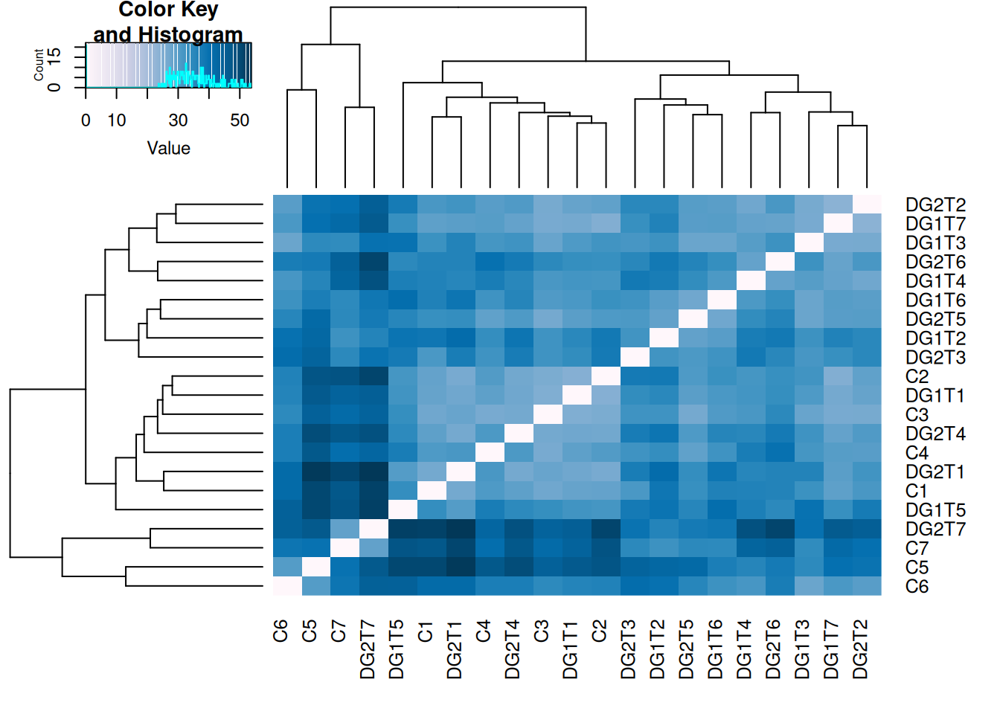
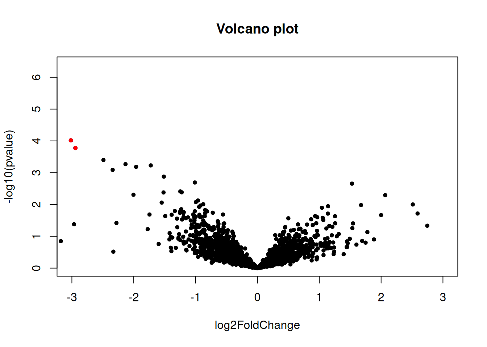
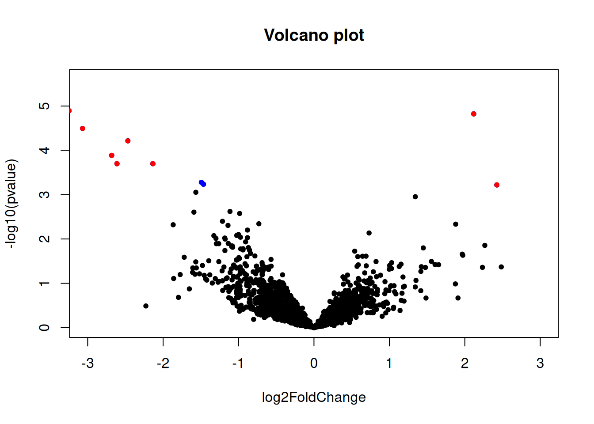

Read counts analysis with DESeq2
Control vs DG1
##
## out of 2382 with nonzero total read count
## adjusted p-value < 0.1
## LFC > 0 (up) : 0, 0%
## LFC < 0 (down) : 5, 0.21%
## outliers [1] : 0, 0%
## low counts [2] : 0, 0%
## (mean count < 4)
## [1] see 'cooksCutoff' argument of ?results
## [2] see 'independentFiltering' argument of ?resultsSignificant genes with the strongest up regulation
## log2 fold change (MLE): Group DG1 vs C
## Wald test p-value: Group DG1 vs C
## DataFrame with 0 rows and 6 columnsSignificant genes with the strongest down regulation
## log2 fold change (MLE): Group DG1 vs C
## Wald test p-value: Group DG1 vs C
## DataFrame with 5 rows and 6 columns
## baseMean log2FoldChange lfcSE stat pvalue
## <numeric> <numeric> <numeric> <numeric> <numeric>
## Cluster-3916.0 55.6706 -2.94253 0.781784 -3.76387 1.67306e-04
## Cluster-3207.0 122.1117 -3.01662 0.773529 -3.89981 9.62676e-05
## Cluster-1863.0 117.9786 -3.43189 0.747379 -4.59189 4.39240e-06
## Cluster-5165.0 110.3886 -3.76739 0.744055 -5.06332 4.12018e-07
## Cluster-3339.0 238.1749 -3.76796 0.745617 -5.05348 4.33823e-07
## padj
## <numeric>
## Cluster-3916.0 0.079704580
## Cluster-3207.0 0.057327341
## Cluster-1863.0 0.003487567
## Cluster-5165.0 0.000516683
## Cluster-3339.0 0.000516683Report
MA plots
Samples clustering

Volcano plot

Control vs DG2
##
## out of 2382 with nonzero total read count
## adjusted p-value < 0.1
## LFC > 0 (up) : 2, 0.084%
## LFC < 0 (down) : 11, 0.46%
## outliers [1] : 0, 0%
## low counts [2] : 416, 17%
## (mean count < 11)
## [1] see 'cooksCutoff' argument of ?results
## [2] see 'independentFiltering' argument of ?resultsSignificant genes with the strongest up regulation
## log2 fold change (MLE): Group DG2 vs C
## Wald test p-value: Group DG2 vs C
## DataFrame with 2 rows and 6 columns
## baseMean log2FoldChange lfcSE stat pvalue
## <numeric> <numeric> <numeric> <numeric> <numeric>
## Cluster-4989.0 53.9643 2.12202 0.489500 4.33508 1.45705e-05
## Cluster-1248.0 16.7464 2.42403 0.705201 3.43736 5.87423e-04
## padj
## <numeric>
## Cluster-4989.0 0.00716141
## Cluster-1248.0 0.09962107Significant genes with the strongest down regulation
## log2 fold change (MLE): Group DG2 vs C
## Wald test p-value: Group DG2 vs C
## DataFrame with 11 rows and 6 columns
## baseMean log2FoldChange lfcSE stat pvalue
## <numeric> <numeric> <numeric> <numeric> <numeric>
## Cluster-4181.0 1738.2480 -1.46294 0.427096 -3.42532 6.14087e-04
## Cluster-5090.0 1752.1134 -1.49089 0.431838 -3.45243 5.55565e-04
## Cluster-3299.0 874.1814 -2.13541 0.575562 -3.71014 2.07148e-04
## Cluster-3204.0 450.4366 -2.46657 0.616790 -3.99904 6.36005e-05
## Cluster-4009.0 50.4801 -2.61175 0.702898 -3.71570 2.02645e-04
## Cluster-2041.0 41.8471 -2.68016 0.700727 -3.82482 1.30868e-04
## Cluster-5165.0 110.3886 -3.06616 0.739150 -4.14823 3.35062e-05
## Cluster-1863.0 117.9786 -3.24591 0.745620 -4.35330 1.34102e-05
## Cluster-3339.0 238.1749 -3.49196 0.744314 -4.69152 2.71187e-06
## Cluster-3207.0 122.1117 -3.59555 0.775361 -4.63726 3.53055e-06
## Cluster-1255.0 267.1688 -6.79782 1.995720 -3.40620 6.58735e-04
## padj
## <numeric>
## Cluster-4181.0 0.09962107
## Cluster-5090.0 0.09962107
## Cluster-3299.0 0.04525031
## Cluster-3204.0 0.02083977
## Cluster-4009.0 0.04525031
## Cluster-2041.0 0.03675513
## Cluster-5165.0 0.01317462
## Cluster-1863.0 0.00716141
## Cluster-3339.0 0.00347053
## Cluster-3207.0 0.00347053
## Cluster-1255.0 0.09962107Report
MA plots
Samples clustering
Volcano plot
